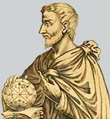
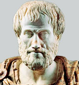
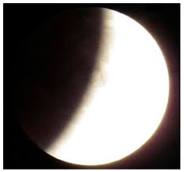
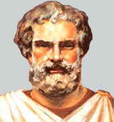
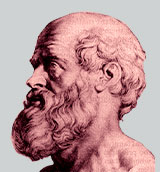

A filosofia que norteou o pensamento desta escola teve como alicerce as ideias de três de seus maiores membros:
Pitágoras, Philohaus, e Parmênides. O conceito geométrico do universo desenvolvido por eles era basicamente descrito dessa forma:
A filosofia que norteou o pensamento desta escola teve como alicerce as ideias de três de seus maiores membros:
Pitágoras, Philohaus, e Parmênides. O conceito geométrico do universo desenvolvido por eles era basicamente descrito dessa forma:
Discípulo de Platão tenta expressar matematicamente suas ideias sobre as posições e movimentos dos planetas. Eudóxio sabia que um sistema de poucas esferas idealizado por Pitágoras era inadequado. Os planetas não se moviam sempre em um círculo. Uns se moviam mais rápidos, outros mais lentos, e até mesmo se moviam para trás. Eudóxio elabora um sistema em que cada planeta tem um conjunto de quatro esferas concêntricas, o Sol e a Lua tinham somente três esferas.
Aristóteles rejeita o modelo Pitagórico e tenta melhorar o de Eudóxio colocando mais esferas, que no total eram 54 com eixos, diâmetros e velocidades diversas Aristóteles concluiu que a Terra era redonda observando sua sombra sobre a face da Lua, durante um eclipse lunar. Explicou que as fases da Lua dependem de quanto da sua face iluminada pelo Sol, está voltada para a Terra. Explicou também os eclipses: um eclipse do Sol ocorre quando a Lua passa entre a Terra e o Sol; um eclipse da Lua ocorre quando a Lua entra na sombra da Terra Aristóteles argumentou a favor da esfericidade da Terra, já que a sombra da Terra na Lua durante um eclipse lunar é sempre arredondada.
Aristarco Constrói seu modelo com duas hipóteses que procuravam simplificar tudo: 1)A Terra gira sobre si mesma – explicando o dia e a noite; 2)A Terra gira ao redor do Sol juntamente com os outros planetas conhecidos – isto explicava o movimento aparente do Sol. Embora a ideia fosse simples o modelo falhava por completo: primeiramente a tradição era contra, não havia nenhuma evidência da rotação da Terra, contestavam isto dizendo que se a Terra girasse ao redor do Sol as estrelas deveriam apresentar a paralaxe e nenhuma delas apresentava e por fim estemodelo afastava-se dos dogmas estabelecidos por Platão o que era errado para os filósofos da época.
 último dos grandes astrônomos gregos
escreveu o ivro Almagesto que se constituiu por 14 séculos o alicerce da sabedoria. Cláudio Ptolomeu, que viveu entre 85 e 165, fez
a composição de 13 volumes sobre astronomia, conhecido como o Almagesto, que é a maior fonte de conhecimento sobre a astronomia na Grécia.
A contribuição mais importante de Ptolomeu foi uma representação geométrica do sistema solar, com círculos e epiciclos, que permitia
predizer o movimento dos planetas com considerável precisão, e que foi usado até o Renascimento, no século XVI.
Os ensinamentos de Ptolomeu se estenderam por toda a Idade Média, considera-se que tenha sido um dos alicerces para o Cristianismo daquela época.
Os gregos, pela sua importância não como construtores de teorias a respeito do sistema solar, mas por suas contribuições na determinação de
algumas medidas importantes, nos deixaram informações e ensinamentos importantes.
último dos grandes astrônomos gregos
escreveu o ivro Almagesto que se constituiu por 14 séculos o alicerce da sabedoria. Cláudio Ptolomeu, que viveu entre 85 e 165, fez
a composição de 13 volumes sobre astronomia, conhecido como o Almagesto, que é a maior fonte de conhecimento sobre a astronomia na Grécia.
A contribuição mais importante de Ptolomeu foi uma representação geométrica do sistema solar, com círculos e epiciclos, que permitia
predizer o movimento dos planetas com considerável precisão, e que foi usado até o Renascimento, no século XVI.
Os ensinamentos de Ptolomeu se estenderam por toda a Idade Média, considera-se que tenha sido um dos alicerces para o Cristianismo daquela época.
Os gregos, pela sua importância não como construtores de teorias a respeito do sistema solar, mas por suas contribuições na determinação de
algumas medidas importantes, nos deixaram informações e ensinamentos importantes.
Diretor da Biblioteca Alexandrina de 240 a.C. a 194 a.C., foi o primeiro a medir o diâmetro da Terra. Ele notou que na cidade egípcia de Siena , no primeiro dia do verão a luz atingia o fundo de um grande poço , ao meio-dia. Alexandria está a 5000 estádios ao norte de Siena . Medindo o tamanho da sombra de um bastão na vertical, Eratóstenes observou que, em Alexandria, no mesmo dia e hora, o Sol não estava diretamente no zênite, mas aproximadamente a 7 graus mais ao sul. Como 7 graus corresponde a 1/50 de um círculo, Alexandria deveria estar a 1/50 da circunferência da Terra ao norte de Siena, e a circunferência da Terra deveria ser o resultado de 50 x 5000 estádios. Infelizmente não é possível se ter certeza do valor do estádio usado por Eratóstenes, já que os gregos usavam diferentes tipos de estádios. Se ele utilizou um estádio equivalente a 1/6 km, o valor se aproxima de 1% do valor correto que é de 40 000 km. O diâmetro da Terra é obtido dividindo-se a circunferência pelo raio .
 Considerado o maior astrônomo da era
pré-cristã, construiu um observatório na ilha de Rhodes, onde fez observações durante o período de 160 a 127 a.C. Como resultado
ele compilou um catálogo com a posição no céu e a magnitude de 850 estrelas. A magnitude, que especificava o brilho da estrela,
era dividida em seis categorias, de 1 a 6, sendo 1 a mais brilhante, e 6 a mais fraca visível a olho nu;. Hiparco deduziu
corretamente a direção dos polos celestes, e até mesmo a precessão, que é a variação da direção do eixo de rotação da Terra devido
à influência gravitacional da Lua e do Sol, que leva cerca de 26000 anos para completar um ciclo. Para deduzir a precessão, ele
comparou as posições de várias estrelas com aquelas catalogadas por Timocharis e Aristyllus 150 anos antes. Estes eram membros da
escola Alexandrina do século III a.C., e foram os primeiros a medir as distâncias das estrelas de pontos fixos no céu (coordenadas
eclípticas).
Considerado o maior astrônomo da era
pré-cristã, construiu um observatório na ilha de Rhodes, onde fez observações durante o período de 160 a 127 a.C. Como resultado
ele compilou um catálogo com a posição no céu e a magnitude de 850 estrelas. A magnitude, que especificava o brilho da estrela,
era dividida em seis categorias, de 1 a 6, sendo 1 a mais brilhante, e 6 a mais fraca visível a olho nu;. Hiparco deduziu
corretamente a direção dos polos celestes, e até mesmo a precessão, que é a variação da direção do eixo de rotação da Terra devido
à influência gravitacional da Lua e do Sol, que leva cerca de 26000 anos para completar um ciclo. Para deduzir a precessão, ele
comparou as posições de várias estrelas com aquelas catalogadas por Timocharis e Aristyllus 150 anos antes. Estes eram membros da
escola Alexandrina do século III a.C., e foram os primeiros a medir as distâncias das estrelas de pontos fixos no céu (coordenadas
eclípticas).  Foram dos primeiros a trabalhar na biblioteca de Alexandria, que se chamava Museu, e foi fundada pelo rei do Egito,
Ptolémée Sôter Ier, em 305 a.C. Hiparco também deduziu o valor correto de 8/3 para a razão entre o tamanho da sombra da Terra e o tamanho da Lua, e também encontrou que a Lua estava a uma distância de 59 vezes ao raio da Terra . Ele determinou a duração do ano com uma precisão de 6 minutos.
Foram dos primeiros a trabalhar na biblioteca de Alexandria, que se chamava Museu, e foi fundada pelo rei do Egito,
Ptolémée Sôter Ier, em 305 a.C. Hiparco também deduziu o valor correto de 8/3 para a razão entre o tamanho da sombra da Terra e o tamanho da Lua, e também encontrou que a Lua estava a uma distância de 59 vezes ao raio da Terra . Ele determinou a duração do ano com uma precisão de 6 minutos.